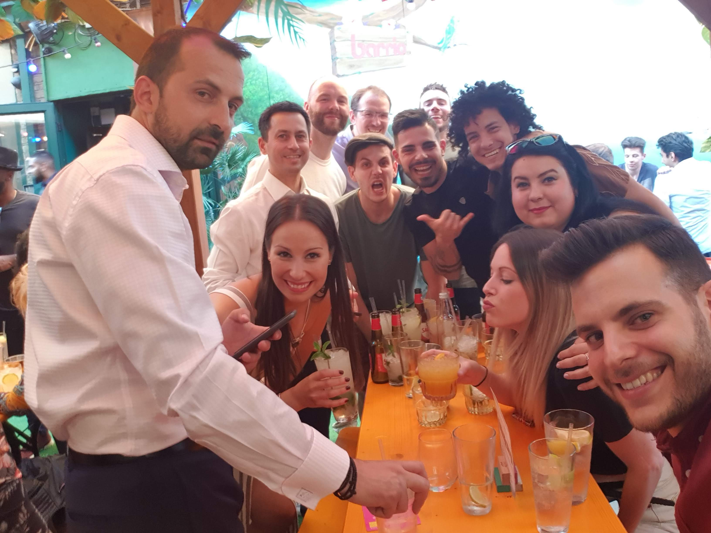
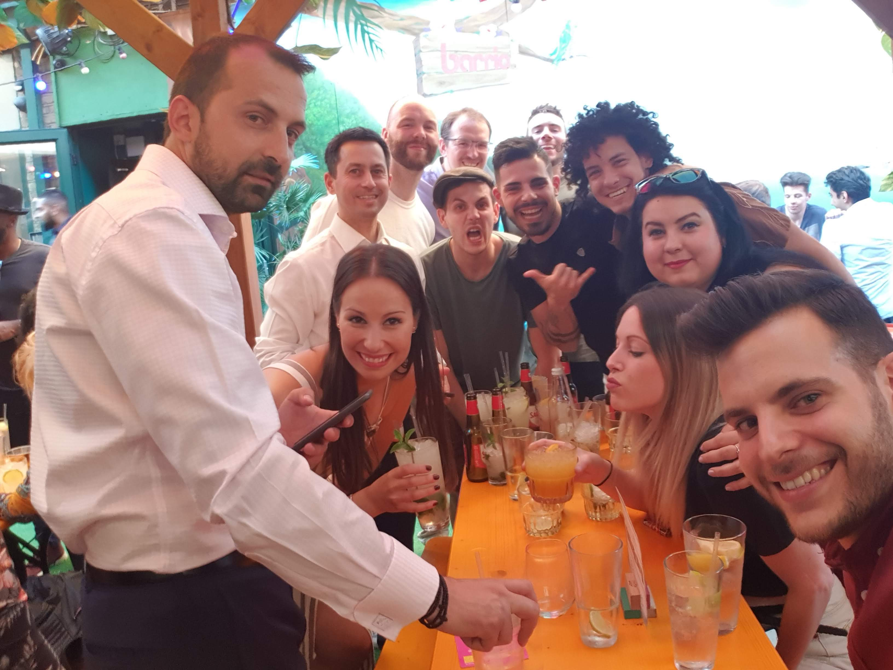
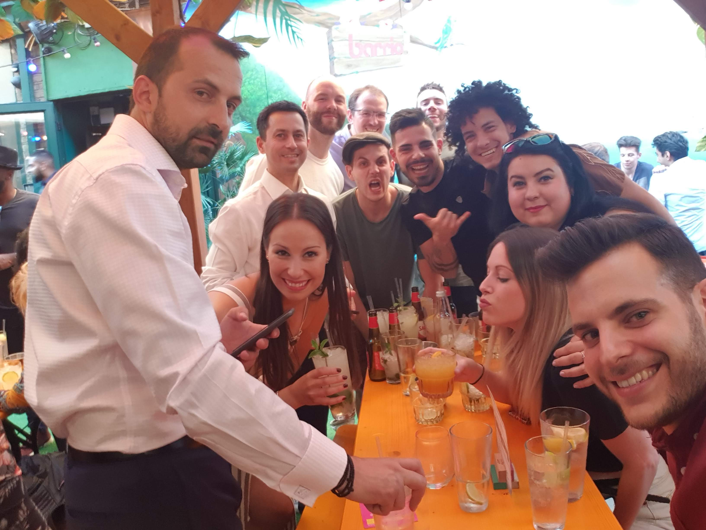

As I look back now , after 4 years of living in London, I realise, these were my best and worst years so far. All the places I've been, the people I met, the experience I've got balance out the hard times, the dissapointments and failures I've been through. London is a wonderful city, full of innovation, beauty, knowledge, however, is too crowded, expensive, cloudy and competitive.
I think, my best years in London were from January 2017 to September 2018, when I was working for the DoubleTree Angel. These were the times when I learnt,worked, got a lot of experience, partied, had fun and made friends the most, out of the 4 years since I've been here.
These are some of my many favourite pictures from my Team Angel era :
